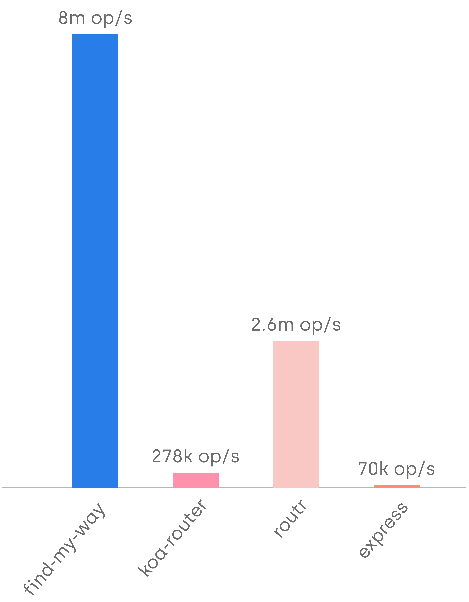
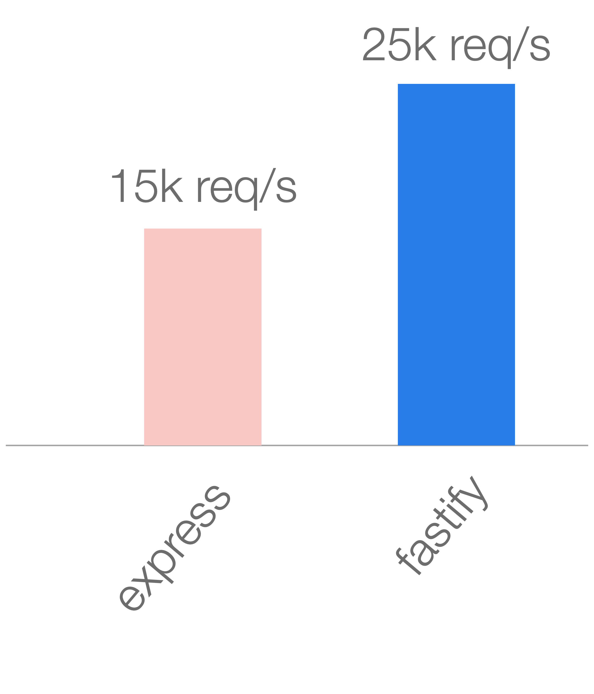

Take your HTTP server to

by @matteocollina
Ludicrous speed is from Spaceballs
Node Core
'use strict'
var server = require('http').createServer(handle)
server.listen(3000)
function handle (req, res) {
res.setHeader('Content-Type', 'application/json')
res.end(JSON.stringify({ hello: 'world' }))
}
Express
'use strict'
var express = require('express')
var app = express()
app.disable('etag').disable('x-powered-by')
app.get('/', function (req, res) {
res.json({ hello: 'world' })
})
app.listen(3000)


The path to fast
-
Start from scratch
-
Add a feature
-
Measure
-
Optimize until it has no overhead
-
GOTO 2
Can we speed up Core?
The problem with JSON.stringify
- recursive function, hard to optimize
- generic code, cannot be type specific
Serialization
fast-json-stringify
- schema-based JSON rendering
- generates code based on the schema
- new Function(), but it is safe
require('http').createServer(handle).listen(3000)
var flatstr = require('flatstr')
var stringify = require('fast-json-stringify')({
type: 'object',
properties: { hello: { type: 'string' } }
})
function handle (req, res) {
res.setHeader('Content-Type', 'application/json')
res.end(flatstr(stringify({ hello: 'world' })))
}
Adding an HTTP router
- https://github.com/delvedor/find-my-way
- avoid closure allocation
- built on a radix-tree
- safe
routing
https://github.com/delvedor/router-benchmarkconst router = require('find-my-way')()
const flatstr = require('flatstr')
require('http').createServer(router.lookup.bind(router)).listen(3000)
var stringify = require('fast-json-stringify')({
type: 'object',
properties: { hello: { type: 'string' } }
})
router.on('GET', '/', function root (req, res, params) {
res.setHeader('Content-Type', 'application/json')
res.end(flatstr(stringify({ hello: 'world' })))
}

https://github.com/fastify/fastify
'use strict'
const fastify = require('fastify')()
fastify.get('/', async function (req, reply) {
return { hello: 'world' }
})
fastify.listen(3000)
fastify.get('/', {
schema: {
response: {
200: {
type: 'object',
properties: { hello: { type: 'string' } }
}
}
}
}, (req, reply) => {
reply.send({ hello: 'world' })
})
Features Comparison
| Feature | Express | Hapi | Fastify |
|---|---|---|---|
| router | ✔ | ✔ | ✔ |
| middleware | ✔ | ❌ | ✔ |
| plugins | ❌ | ✔ | ✔ |
| validation | ❌ | ✔ | ✔ |
| hooks | ❌ | ✔ | ✔ |
| decorators | ❌ | ✔ | ✔ |
| logging | ❌ | ✔ | ✔ |
| async/await | ❌ | ✔ | ✔ |
| req/sec | 18k | 20k | 36k |

The problem with closures
function process (bigdata, cb) {
remoteCall(bigdata, function (err, something) {
storeSomething(something, function (err, res) {
// this function is short-lived and hard to optimize
// bigdata is still in scope!
cb(null, res * 2)
})
})
}
Avoid nested closures 1/2
function process (bigdata, cb) {
remoteCall(bigdata, function (err, something) {
// bigdata exits scope here
callStoreSomething(something, cb)
})
}
Avoid nested closures 2/2
function callStoreSomething(something, cb) {
/* this function can be optimized! */
storeSomething(something, function (err, res) {
cb(null, res * 2)
})
}
Fastify is extremely careful in maintaining the least amount of state in the most efficient way.
middleware
fastify consumes (req, res, next) middlewares!
helmet comparison


validation speed

https://github.com/ebdrup/json-schema-benchmark
validation correctness

https://github.com/ebdrup/json-schema-benchmark
Fast is not everything
Fastify plugin system
fastify.register(
require('my-plugin'),
{ options }
)
Everything that could be a plugin, should be a plugin
module.exports = function myPlugin (fastify, opts, next) {
// register other plugins
fastify.register(...)
// add hooks
fastify.addHook(...)
// add decorator
fastify.decorate(...)
// add routes
fastify.route(...)
next()
}


const fp = require('fastify-plugin')
async function myPlugin (fastify, options) {
fastify.decorate('util', yourAwesomeUtility)
// now you can use it with `fastify.util`
}
module.exports = fp(myPlugin)
const fastify = require('fastify')()
fastify.register(require('./api/v1'), {
prefix: '/v1',
logLevel: 'error'
})
fastify.register(require('./api/v2'), {
prefix: '/v2',
logLevel: 'debug'
})
https://www.fastify.io
Demo
Fastify is not built by one developer
Open Open Source
Individuals making significant and valuable *contributions* are given commit-access to the project to contribute as they see fit.
openopensource.org10 Collaborators
110 Contributors
>= 1800 Commits
>= 98 versions
87 plugins
Most code does not need to go
This presentation
Thanks!